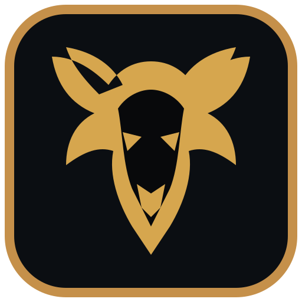
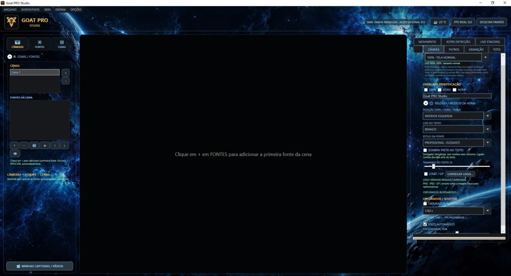
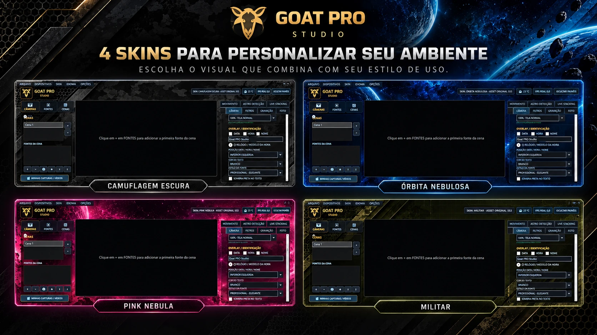
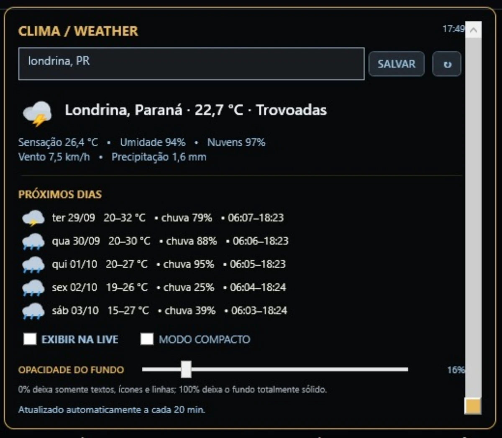

Câmeras USB e IP
Conexão e gerenciamento de fontes de vídeo para diferentes cenários de captura e monitoramento.

GOAT PRO StudioCAPTURE • OBSERVE • PRODUZA • SEM LIMITES
Uma central de captura e monitoramento para trabalhar com câmeras USB e IP, gravação, Live Stack, detecção de movimento, recursos astronômicos, streaming, clima integrado e personalização visual em uma única interface.

O GOAT PRO Studio reúne ferramentas que normalmente ficam espalhadas em vários programas, mantendo o fluxo centralizado.
Conexão e gerenciamento de fontes de vídeo para diferentes cenários de captura e monitoramento.
Capture vídeo e imagens com controles dedicados, formatos de saída e organização das capturas.
Empilhamento de frames para observação e captura de cenas de baixa luminosidade e uso astronômico.
Monitoramento automático com parâmetros de sensibilidade e captura orientada por eventos.
Ferramentas dedicadas para detecção e registro automático de eventos no céu.
Recursos para transmissão ao vivo integrados ao mesmo ambiente de captura e produção.
Ajustes de nitidez, redução de ruído, lente, cor, histograma e outros controles de imagem.
Personalize data, hora, nome ou texto, posição, fonte, cor, logo e GIF animado sobre a composição.
Consulte condições atuais, previsão dos próximos dias, umidade, nuvens, vento, precipitação e horários solares sem sair do programa.
Escolha entre Camuflagem Escura, Órbita Nebulosa, Pink Nebula e Militar para adaptar o ambiente de trabalho ao seu estilo.
As skins agora fazem parte da experiência real do GOAT PRO Studio e podem ser escolhidas conforme seu estilo de uso.

Consulte o clima sem sair do GOAT PRO Studio. O painel reúne condições atuais e previsão dos próximos dias para apoiar observação, captura e operação em campo.

O desempenho final depende da resolução, FPS, codec, quantidade de câmeras, filtros e recursos utilizados ao mesmo tempo.
O software está em evolução ativa. Novas versões e melhorias serão disponibilizadas conforme o desenvolvimento do produto.
Compra será processada com segurança pela Kiwify.
Esta versão é desenvolvida para Windows. Uma versão móvel é um projeto separado.
Sim. O GOAT PRO Studio segue em desenvolvimento ativo e novas versões serão disponibilizadas conforme a evolução do produto.
O programa foi desenvolvido para trabalhar com fontes USB e IP compatíveis. A compatibilidade pode variar conforme modelo, protocolo e configuração da câmera.
Não. Resolução, FPS, codec, câmera, CPU, GPU e recursos ativos influenciam diretamente o desempenho.